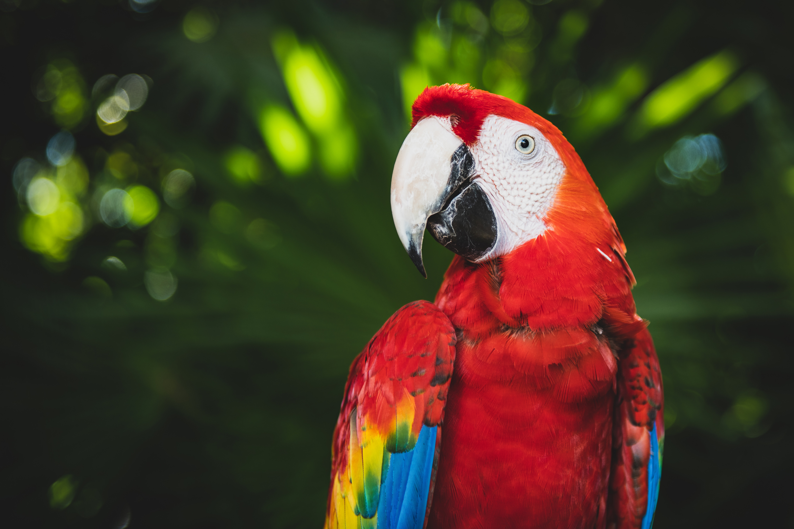
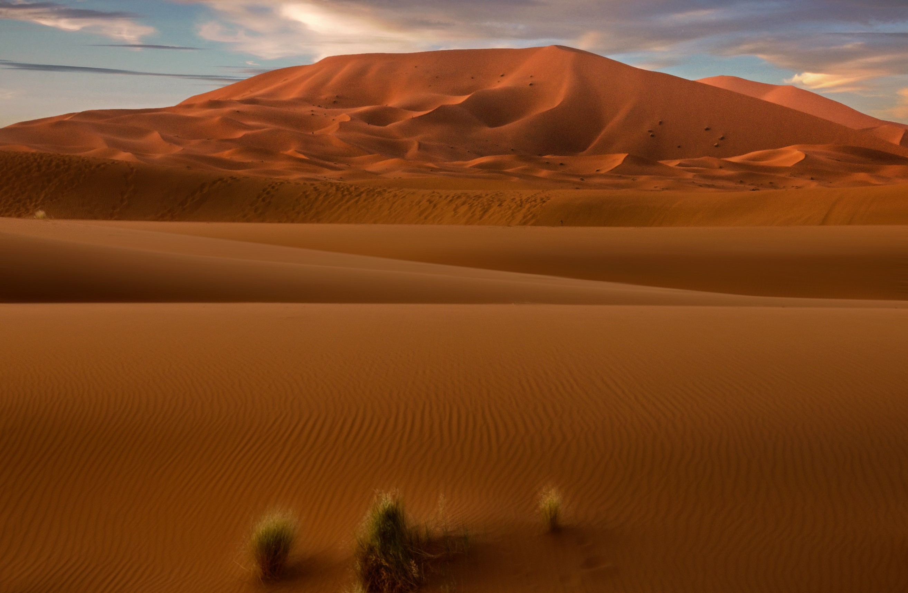
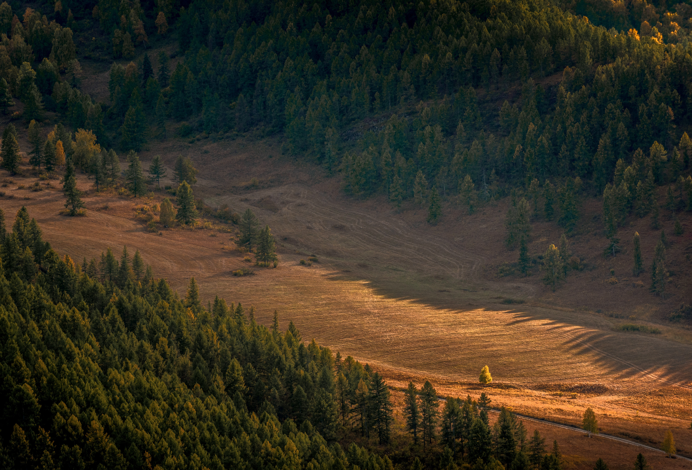
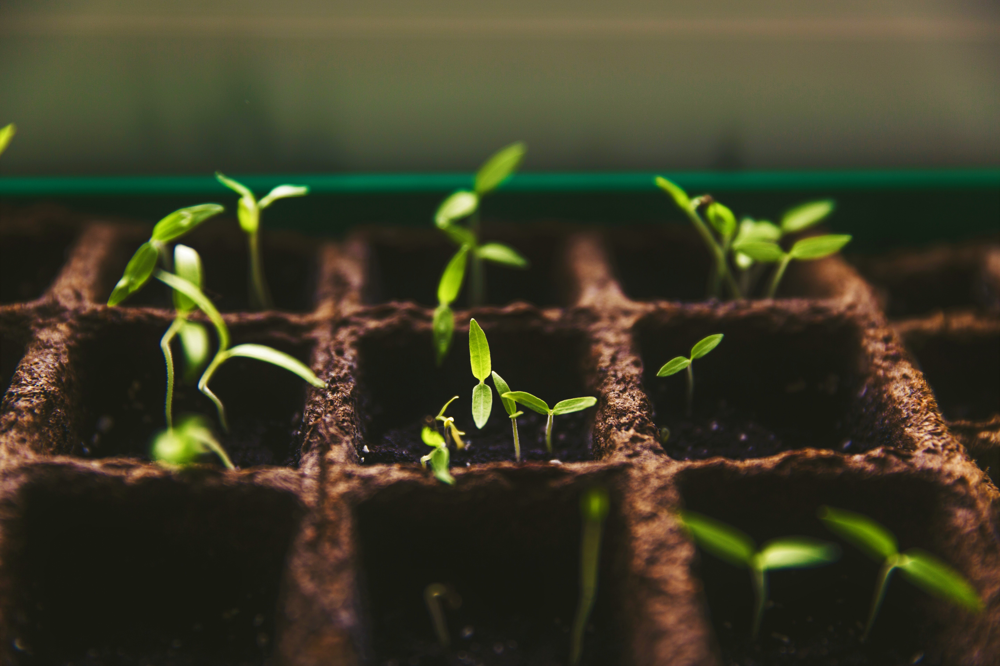

Folgen des Klimawandels für den Regenwald
Wichtigkeit des Regenwaldes für die Welt und das Klima
Der Regenwald fängt ca. 17% der Weltweiten CO2 Emissionen ab.
Er speichert also breits ca. 250 Milliarden Tonnen Kohlenstoff ab.
[Q1, Q3]
Zudem bietet der Regenwald für etliche Arten einen Lebensraum. Er bietet 60.000 Pflanzenarten, 2.000 Fischarten, 1.000 Vogelarten, 500 Baumarten(in Europa kommen nur 50 Baumarten vor) und 300 Säugetierarten. Ebenso wie Amazonas-Delfinen und Riesenottern. [Q2]
Der Regenwald ist außerdem auch ein wichtiger Ort für die Rohstoffgewinnung von Holz. [Q3]
Durch gespeichertes Wasser bietet der Regenwald Schutz vor Erdrutschen und Erosionen[Q1]
Zudem bietet der Regenwald für etliche Arten einen Lebensraum. Er bietet 60.000 Pflanzenarten, 2.000 Fischarten, 1.000 Vogelarten, 500 Baumarten(in Europa kommen nur 50 Baumarten vor) und 300 Säugetierarten. Ebenso wie Amazonas-Delfinen und Riesenottern. [Q2]
Der Regenwald ist außerdem auch ein wichtiger Ort für die Rohstoffgewinnung von Holz. [Q3]
Durch gespeichertes Wasser bietet der Regenwald Schutz vor Erdrutschen und Erosionen[Q1]

Bild: Img2
Bild: Img2
Gegenwärtiger Zustand des Regenwaldes

Der gegenwärtige Zustand des Regenwaldes ist dramatisch schlecht.
Durch Rodung und steigende Temperaturen sinkt bereits das Speichervolumen für CO2.
Zudem herschen vermehrt Dürre und Hitze. [Q3, Q4]
Mit der Zeit sind die Folgen des Klimawandels auf den Zustand des Regenwaldes immer ersichtlicher. Es zeichnet sich eine dramatischere Beschleunigung in den Auswirkungen ab.
Zudem herschen vermehrt Dürre und Hitze. [Q3, Q4]
Mit der Zeit sind die Folgen des Klimawandels auf den Zustand des Regenwaldes immer ersichtlicher. Es zeichnet sich eine dramatischere Beschleunigung in den Auswirkungen ab.
Folgen für den Regenwald bei 2-3°C
Bei einer Erwärmung um 2 bis 3°C im Vergleich zu Heute,
treten drastische Folgen für den Regenwald auf.
20% bis 30% der Arten werden von einem erhöhten Aussterberisiko bedroht werden.
Davon sind besonders stark an ihr Ökosystem angepasste Arten betroffen.
Dies gefährdet nicht nur die Arten, die direkt bedroht werden, sondern auch den Rest des Ökosystems.
Der Klimawandel führt zudem auch zu einer verminderten Wasserpeicherung. Das kann zu vermindertem Schutz vor Erdrutschen und Erosionen führen. [Q1]
20% bis 30% der Arten werden von einem erhöhten Aussterberisiko bedroht werden.
Davon sind besonders stark an ihr Ökosystem angepasste Arten betroffen.
Dies gefährdet nicht nur die Arten, die direkt bedroht werden, sondern auch den Rest des Ökosystems.
Der Klimawandel führt zudem auch zu einer verminderten Wasserpeicherung. Das kann zu vermindertem Schutz vor Erdrutschen und Erosionen führen. [Q1]

Bild: Img3
Bild: Img3
Verkleinerung des Regenwaldes

Bild: Img4
Bild: Img4
Der Regenwald verkleinert sich stetig.
Laut Computersimulationen könnte die Fläche des Regenwaldes bis zum Ende des 20. Jahrhunderts um rund 70% zurück gehen.
Dieser Rückgang würde eine dramatische Beschleunigung des Klimawandels bewirken.
Diesem Umstand und der sowieso schon fallenden CO2-Speicherkapazität des Regenwaldes, sind in vielen Klimamodellen noch nicht eingerechnet. [Q1]
Laut Computersimulationen könnte die Fläche des Regenwaldes bis zum Ende des 20. Jahrhunderts um rund 70% zurück gehen.
Dieser Rückgang würde eine dramatische Beschleunigung des Klimawandels bewirken.
Diesem Umstand und der sowieso schon fallenden CO2-Speicherkapazität des Regenwaldes, sind in vielen Klimamodellen noch nicht eingerechnet. [Q1]
Jeder kann etwas zur Rettung beitragen!
Zur Rettung des Regenwaldes kann sehr viel beigetragen werden.
Jeder kann etwas tun, z.B. durch genaueres Hinsehen beim Konsumieren. Benutzt man Oköpapier bzw. Recyclingpapier sorgt dieses dafür, dass weniger Bäume des Regenwaldes gerodet werden. Hierzu zählt übrigens auch Toilettenpapier. Dieses wird nähmlich auch aus auch aus Bäumen hergestellt.
Jeder fünfte Baum wird für die Papierherstellung genutzt, ebenso Wasser und Chemikalien.
Beim Holzkauf sollte auf das FSC-Siegel geachtet werden, dieses steht für nachhaltig produziertes Holz.
Beim Einkauf von Lebensmitteln wie z.B. Kaffee oder Kakao sollte Bio und Fair-Trade gekauft werden. [Q8, Q9]
Ein anderer Weg ist, Regenwaldprojekte finanziel zu unterstützen.
Dies kann entweder über eine Spende erfolgen. Alternativ kann man auch eine Förderschaft abschließen.
Am wichtigsten ist aber Aufmerksamkeit. Der Regenwald hat leider keine richtige Lobby wie z.B. Forstunternehmen. Daher ist es ebenso wichtig auf das Problem mit dem Regenwald aufmerksam zu machen. [Q9]
Jeder kann etwas tun, z.B. durch genaueres Hinsehen beim Konsumieren. Benutzt man Oköpapier bzw. Recyclingpapier sorgt dieses dafür, dass weniger Bäume des Regenwaldes gerodet werden. Hierzu zählt übrigens auch Toilettenpapier. Dieses wird nähmlich auch aus auch aus Bäumen hergestellt.
Jeder fünfte Baum wird für die Papierherstellung genutzt, ebenso Wasser und Chemikalien.
Beim Holzkauf sollte auf das FSC-Siegel geachtet werden, dieses steht für nachhaltig produziertes Holz.
Beim Einkauf von Lebensmitteln wie z.B. Kaffee oder Kakao sollte Bio und Fair-Trade gekauft werden. [Q8, Q9]
Ein anderer Weg ist, Regenwaldprojekte finanziel zu unterstützen.
Dies kann entweder über eine Spende erfolgen. Alternativ kann man auch eine Förderschaft abschließen.
Am wichtigsten ist aber Aufmerksamkeit. Der Regenwald hat leider keine richtige Lobby wie z.B. Forstunternehmen. Daher ist es ebenso wichtig auf das Problem mit dem Regenwald aufmerksam zu machen. [Q9]

Bild: Img5
Bild: Img5